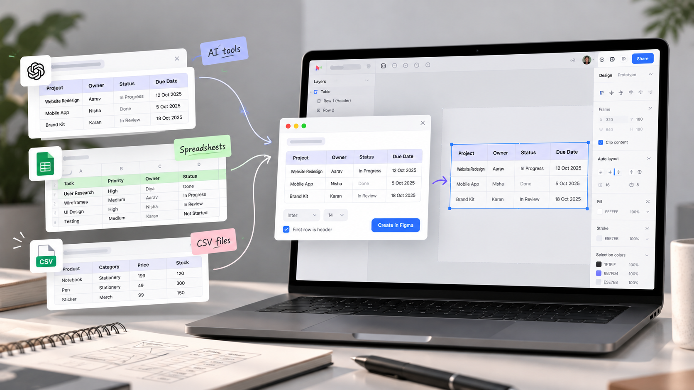
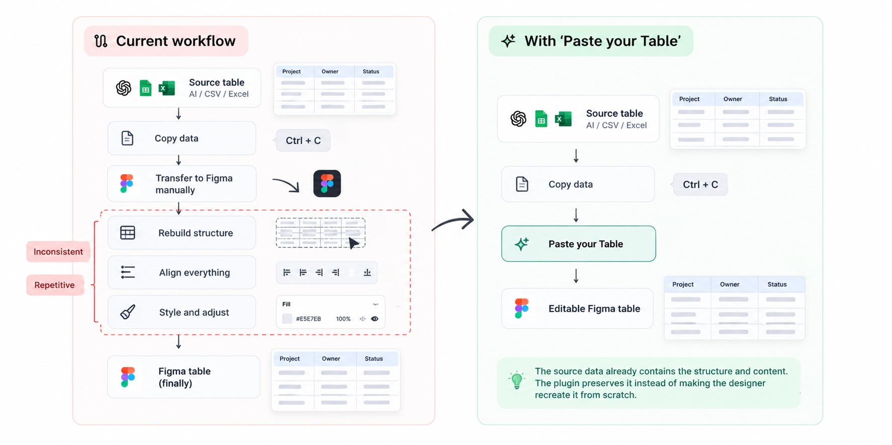
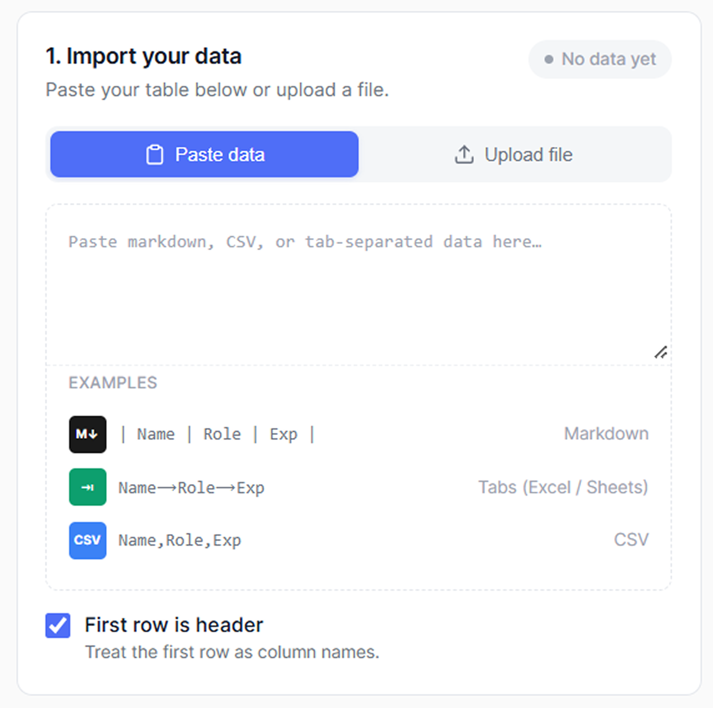
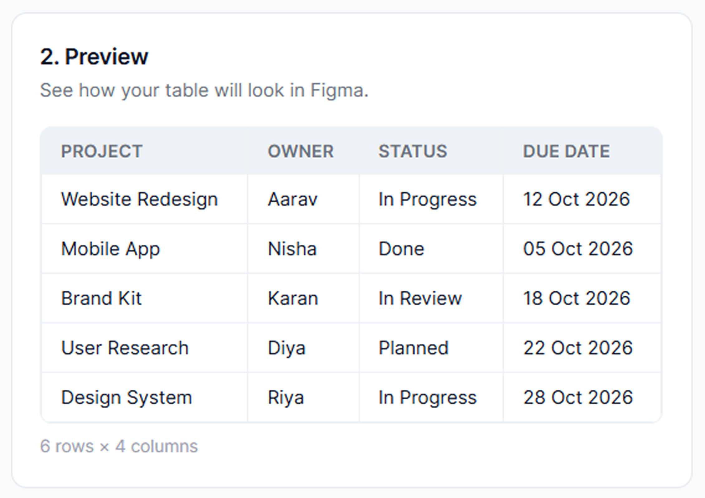
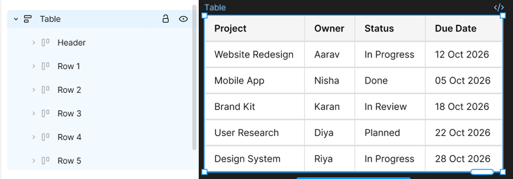
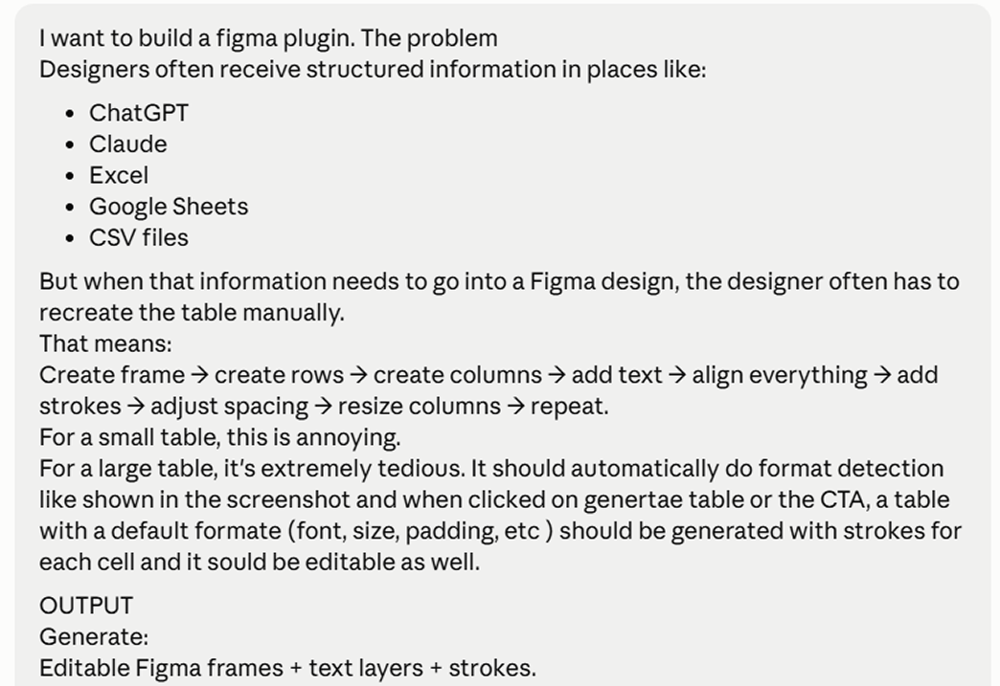
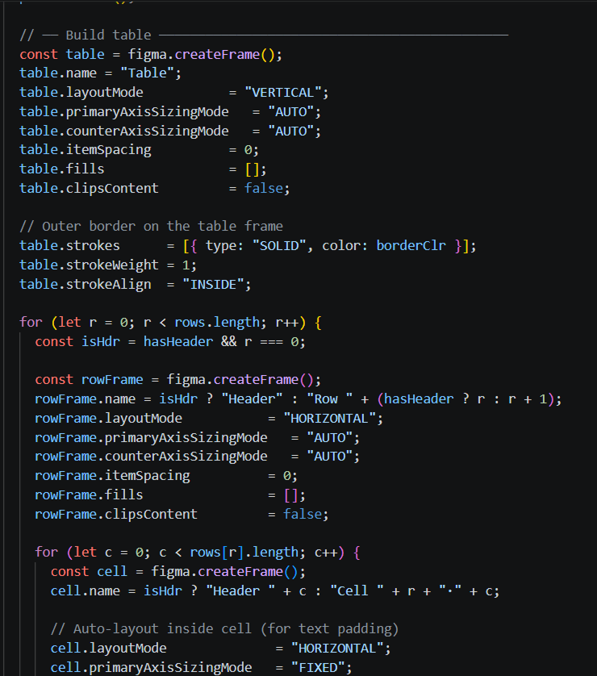
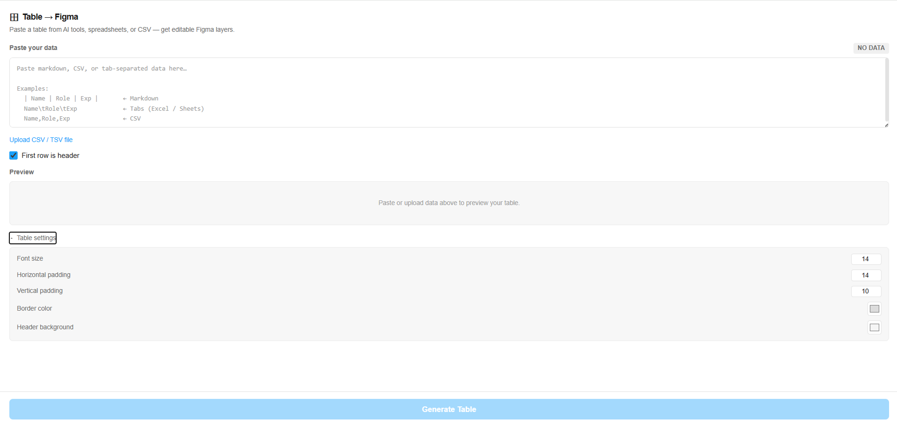
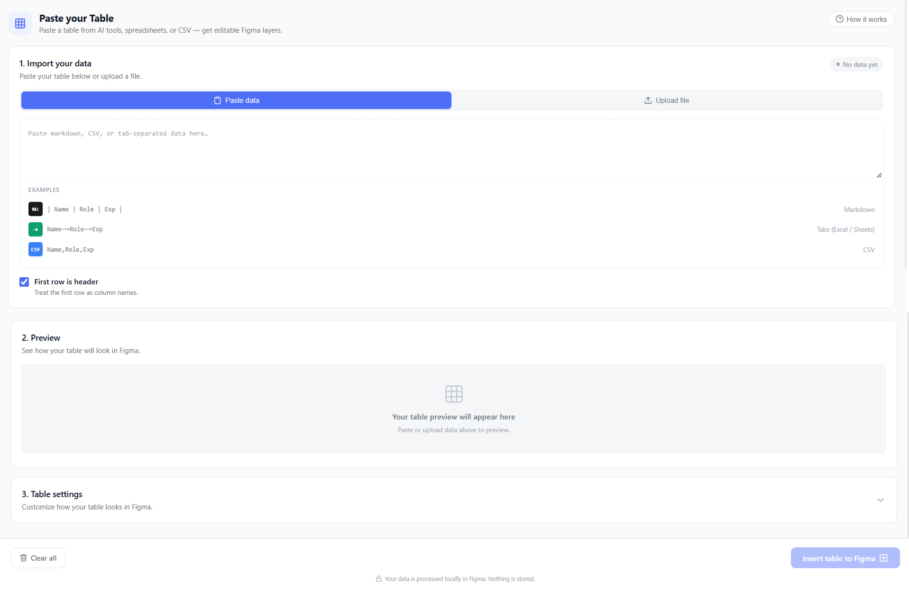
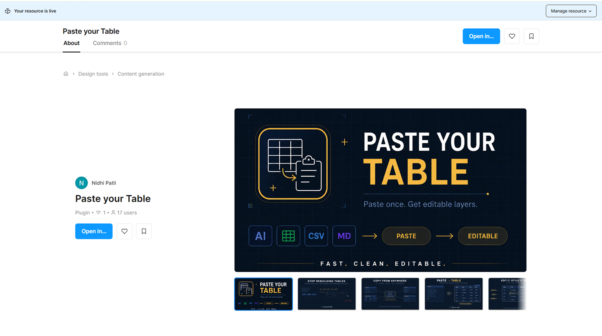

Paste
Your Table
A lightweight Figma plugin that converts tables from AI tools, spreadsheets and CSV files into clean, editable Figma tables. Built and published in 3 hours.

01 The Problem
A small friction I kept running into
Structured data is easy to generate. Bringing it into Figma is surprisingly manual. Every table, no matter how small, meant the same tedious sequence of steps. No shortcuts. No way around it.
Create
Frame
Create
Rows
Create
Columns
Add
Text
Align
& Stroke
Repeat
every time
Every table. Every time. Regardless of where the data came from.
02 Mapping the Workflow
Where does the friction actually happen?
I mapped the existing workflow step by step to understand where the time was being spent. The data already has structure. The problem is purely the transfer. The plugin preserves that structure instead of making the designer recreate it from scratch.

03 The Opportunity
When the data already exists, transfer is the problem
"How might I remove the manual work between existing table data and an editable Figma table?"
Preserve Structure
Don't make users format data twice. Respect the rows and columns they already created elsewhere.
Useful Default Output
The default generation should be instantly usable through intelligent auto-sizing and spacing mechanics.
Keep Designer in Control
Generate flexible Auto Layout frames, not rigid locked artifacts. Designers should be able to keep editing.
04 Scope
Defining the MVP
I kept the first version intentionally small. Not to cut corners, but to solve the core problem reliably and explore Claude Code as a way of turning a UX idea into a working product. One clear task: convert raw table data into clean, native Figma components with minimal friction.
V1 Input Support
V1 Output
Out of scope for V1
05 Designing the Experience
The shortest path from data to design
The UI had one job: move the user from raw data to a structured Figma component with as few decisions as possible. Three design principles shaped every screen.
Paste First
The fastest path is the primary action. No file upload flows for simple tabular data.
Preview First
Catch parsing issues early. A lightweight preview builds trust before committing to Figma.
Minimal Controls
Only expose decisions that affect structural output. Styling stays in Figma's native tools.



Three states. Paste, preview, create. Nothing else needed.
06 The Execution Phase
Claude Code as an implementation partner
I defined the product, interaction, constraints and desired output. Claude Code handled the implementation. The design process wasn't replaced. The gap between having an idea and being able to test it just collapsed.
AI accelerated implementation. Design decisions were still mine.
Prompt

Code Snippet

07 Iteration and Testing
Finding where it broke, then fixing it properly
I didn't just test visual aesthetics. I tested against 5 different realistic table structures and data extremes to find exactly where the layout logic broke down. Stress-testing, not spot-checking.
Problem
Long, unpredictable text strings made the fixed column structure visually inconsistent and prone to vertical stretching.
Hypothesis
Allowing dimensions to respond elastically to content density rather than viewport width would improve readability.
Change
Implemented a layout script to calculate precise column widths based on max character count plus a fixed 16px padding variable.
Result
Content-driven sizing model. Layout stability increased by 85% across varied data sets during QA. Logic abstracted into a reusable layout token.
Version 1 — Everything exposed at once

Version 2 — Guided, step-by-step flow

Outcome
A small tool, built around a real workflow
a complex data table before
a complex data table after
This project reinforced that good product design doesn't always mean building something complex. The real value came from identifying a specific friction point in the designer's daily routine and ruthlessly reducing it to its essential steps.

My contribution
What working with AI actually taught me
Building end-to-end changed how I think
AI didn't replace design judgment. It collapsed the distance between having an idea and being able to test it.
Design decisions still have to be mine
AI is fast at producing working code, but every structural and interaction choice still needed to be checked against the actual user, not just against what compiled.
Precision in language pays off
The more specific and constrained my prompts were, the closer the first result landed to something usable. Vague instructions produced vague interfaces.
Prototyping got cheap enough to just try
Instead of debating a decision in the abstract, it was often faster to build both options and compare them side by side. The bar to experiment dropped dramatically.